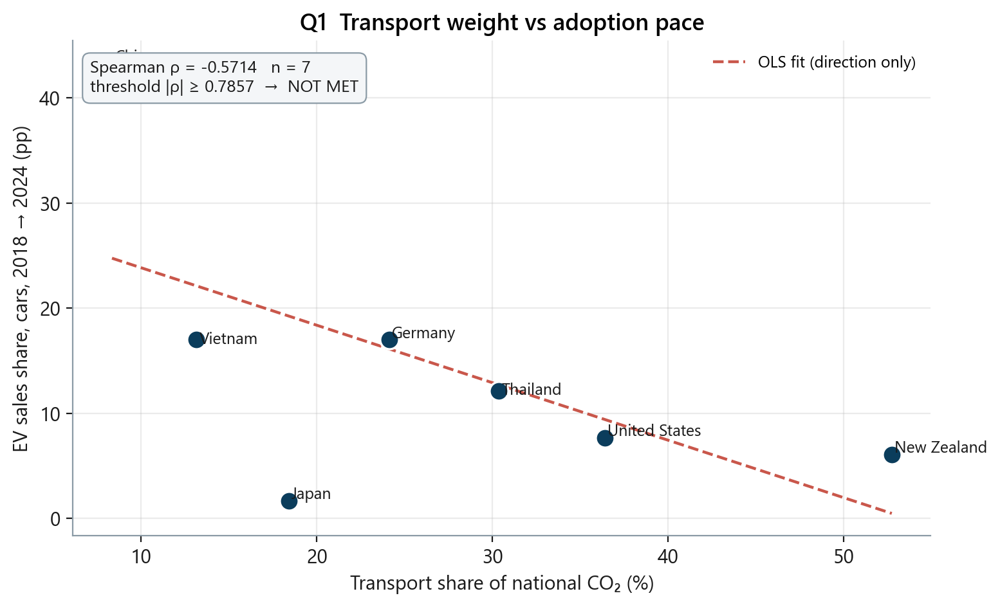
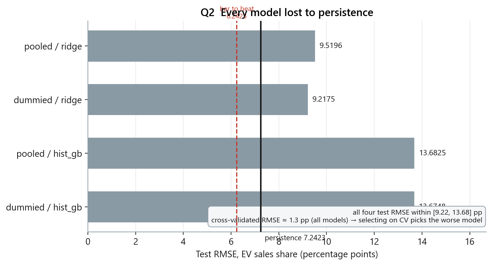
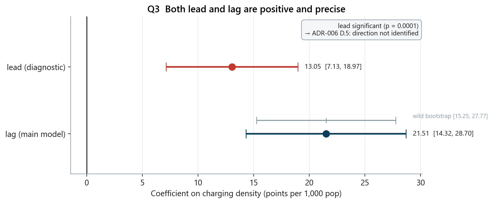
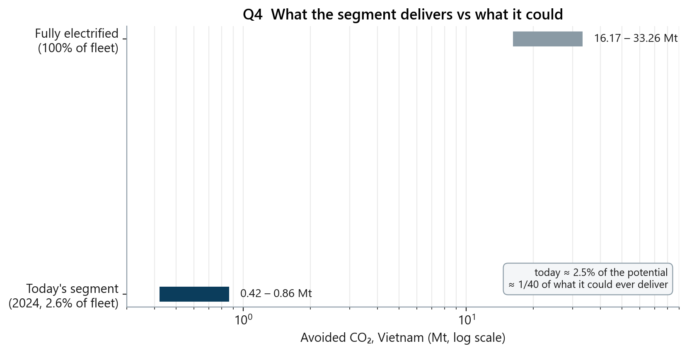

CSC17104 · Programming for Data Science · Final project
What predicts how fast a country electrifies its fleet —
and what it means for Vietnam
Trần Văn Tấn Khôi · 24120010 — Q2, Q4
Lê Thành Đạt · 24120035 — Q1, Q3
Vietnam National University, Ho Chi Minh City · University of Science · Faculty of Information Technology
Fall 2026 · 15-minute presentation + 10-minute Q&A
Why this project
A share tells you who is ahead. It does not tell you what makes a country move — and it is routinely read as if it did.
Three things a share cannot tell you
So instead of ranking countries, we test four specific claims — each with a rule fixed before we looked at the answer.
Khôi2
The project
| # | Question | Type | Owner |
|---|---|---|---|
| Q1 | Does the weight of transport in national CO2 predict the pace of electrification, after controlling for income? | Analysis | Đạt |
| Q2 | Can next year's adoption rate be predicted across countries — and where does the model break? | ML | Khôi |
| Q3 | Does public charging density increase adoption, or merely accompany it? | Analysis | Đạt |
| Q4 | Is Vietnam's transition a two-wheeler story, and how much CO2 does it avoid? | Analysis | Khôi |
Each question carries a hypothesis with a direction and a decision rule, both written down before the analysis. Two of those rules later failed — and both failures are reported as results.
Khôi3
How you should judge this talk
| # | Rule fixed in advance | Outcome | Verdict |
|---|---|---|---|
| Q1 | Spearman |ρ| ≥ 0.7857 and bootstrap 95% CI excluding 0, n = 7 | ρ = −0.5714 | NOT MET |
| Q2 | Test RMSE ≤ 6.2423 pp — at least 1.0 pp better than persistence (7.2423 pp) | best 9.2175 | NOT MET |
| Q3 | Lagged charging CI excludes 0 conditional on the lead test being insignificant | lead p = 0.0001 | UNDETERMINED |
| Q4 | Report a band over a pre-declared assumption set — never a point estimate | 0.42–0.86 Mt | REPORTED AS BAND |
Two of four rules failed. A rule chosen after seeing the data is not a test — so when ours failed, we kept the number and changed the conclusion, not the threshold.
both4
Data
| Source | What we use | Size | Licence |
|---|---|---|---|
| EDGAR 2026 (EU JRC) | National CO2 by 8 sectors, no LULUCF | 4,858 × 60 | IEA-EDGAR CO2 part: CC BY-NC-ND |
| IEA Global EV Outlook 2025 | EV sales share, stock share, public chargers | 16,436 × 9 | CC BY 4.0 |
| World Bank Open Data API | GDP per capita, population, income group | 6–7 × 15 yrs | CC BY 4.0 |
Nothing derived is committed.
The CO2 series is NC-ND: academic use, no redistribution of modified versions. So the repo ships the pipeline, not the data — both inputs are SHA-256 pinned and the pipeline refuses to run on a mismatch.
Two sampling facts shape every answer.
IEA covers 62 countries for sales share but only 7 of our 8 — Singapore has zero rows. And EDGAR's one Transport sector includes aviation and shipping, so it is a coarse proxy for road transport.
Đạt5
Question 1 · Đạt
A cross-country rank test, seven countries, one pre-registered threshold.
Outcome
EV sales share, cars, 2018 → 2024, in percentage points.
Predictor
Transport share of national CO2, EDGAR 2025.
Test
Spearman rank correlation — monotone, robust to the two outliers you will see.
Control
Log GDP per capita, 2018 (OLS).
Đạt6
Question 1 · result

n = 7. China sits bottom-right, New Zealand top-left — the two points that set the sign.
Bootstrap 95% CI [−1.0000, 0.3725] — contains zero.
Threshold |ρ| ≥ 0.7857. We are well short.
H1 predicted the opposite sign.
China: transport is only 8.3% of CO2 yet adoption rose +43.3 pp. New Zealand: transport is 52.7% and adoption rose +6.1 pp.
With n = 7 this is not evidence of no relationship — it is the absence of evidence for this one.
Đạt7
Question 1 · how we know it is right
| Check | What it rules out | Result |
|---|---|---|
| Exact permutation test 5,040 permutations | An asymptotic p-value that assumes normality with n = 7 | p = 0.2000 |
| Income control OLS with log GDP | Income driving both transport weight and adoption | coef −0.46, CI [−1.62, 0.70], p = 0.33 — pattern does not survive |
| Robustness rows 4 alternative specifications | A result that only exists for one choice of year or series | EDGAR 2024 ρ = −0.571 (identical); 2&3 wheelers ρ = −0.750 |
The full robustness table is in the appendix. All four rows keep the sign and none reaches the threshold — so the null is not an artefact of one window or one vehicle series.
Đạt8
Question 2 · Khôi
A time-based split, a persistence baseline, and two models chosen to tell us why they fail.
| Split | Origins → targets | Rows |
|---|---|---|
| Train | 2011–2019 → 2012–2020 | 54 observations, 6 countries |
| Test | 2020–2023 → 2021–2024 | 24 observations, 6 countries |
Baseline. Persistence — next year equals this year. Test RMSE 7.2423 pp, so the bar is 6.2423 pp. Chargers are missing for 16 training rows and imputed with a train-only median.
Models. Ridge, because the two lag features are nearly collinear. HistGradientBoosting, to see whether the relationship is non-linear. Four time folds, split on origins with an assertion that no fold trains on the future.
Khôi9
Question 2 · result

Lower is better. Persistence is the solid line; the dashed line is the pre-registered bar.
The failure is the finding. Cross-validated RMSE is about 1.3 pp for all four models. On test it is 9.2–13.7 pp.
A rank reversal.
The honest, no-peeking rule — pick the primary model on cross-validation alone — selects the model that does worst on test. The folds live in the low-share 2012–2020 window; the test window is the high-growth regime.
Country identity adds nothing. Dummies bought Ridge 0.30 pp and the booster 0.008 pp — the missing information is acceleration, not country.
Errors grow with the target: 1.2 pp under 5 pp of share, 30.7 pp above 30 pp. China's bias is +27 pp — systematic under-prediction of explosive growth.
Khôi10
Question 3 · Đạt

Design. Country and year fixed effects; lag and lead estimated as separate regressions, as ADR-006 fixes; wild cluster bootstrap because six clusters is too few for clustered standard errors.
Verdict. The lead is significant (p = 0.0001), so reverse causality or anticipation cannot be excluded. Under the pre-registered table that is undetermined — a valid, reportable outcome, not a failure.
Đạt11
Question 4 · Khôi
| Factor | Value | Kind | Basis |
|---|---|---|---|
| Transport CO2, Vietnam 2025 | 50.81 Mt | DATA | EDGAR 2026 |
| Two-wheeler EV stock share, 2024 | 2.6% | DATA | IEA GEVO 2025 |
| Two-wheelers' share of transport | 50 / 65 / 80% | ASSUMPTION | road = 100% is a stated ceiling |
| Intensity factor (EV vs ICE) | 0.64 / 0.73 / 0.82 | ASSUMPTION | grid 0.30 / 0.45 / 0.60 kgCO2/kWh |
The grid assumption dominates. Across the full 81-combination envelope the intensity factor spans 1.8× and the two-wheeler share spans 1.6× — so the band is wider from our grid assumption than from our mix assumption. That is why the band, not the point, is the answer.
Khôi12
Question 4 · result

Log scale. Today's segment against the same segment fully electrified.
The reframe. A fully electrified two-wheeler fleet would avoid 16.2–33.3 Mt — 4.2–8.6% of national CO2. Today's segment delivers about a fortieth of that.
The metric says the opposite of the arithmetic.
In 2024 cars overtake two-wheelers on EV share (17.0% vs 9.4%). But at a 22:1 motorbike-to-car fleet ratio, a 2.6% two-wheeler stock share implies roughly twelve times more electric two-wheelers than electric cars.
Khôi13
Close
Not change: the pre-registration.
Two rules failed and we reported them as failures. A null result with a fixed threshold is evidence; the same null with a threshold moved afterwards is not.
Next: three things we could not get.
What we would say to a policy audience
Not "two-wheelers are 0.16% of national emissions" — true, and useless. But: the segment is at about 2.5% of its own potential, and the barrier is not technology.
Thank you — questions welcome.
Decision records: ADR-001 … ADR-008 in docs/decisions/.
Frozen rules: SPECIFICATION.md.
both14
Appendix · not presented
| Specification | n | ρ | Bootstrap 95% CI | Meets |ρ| ≥ 0.7857? |
|---|---|---|---|---|
| Main: cars, EDGAR 2025, 2018→2024 | 7 | −0.5714 | [−1.0000, 0.3725] | No |
| EDGAR 2024 instead of 2025 | 7 | −0.5714 | identical | No |
| 2&3 wheelers as the series | 7 | −0.7500 | [−1.0000, 0.0442] | No |
| Cars, 2015→2024 window | 6 | −0.3714 | [−1.0000, 0.8065] | No |
| 2&3 wheelers, 2015→2024 window | 6 | −0.6571 | [−1.0000, 0.5000] | No |
The most favourable row is the two-wheeler series at ρ = −0.750 — still below the threshold, and still the wrong sign for H1. Exact permutation p for that row is 0.0663.
ĐạtA1
Appendix · not presented
| Model | RMSE | MAE |
|---|---|---|
| persistence | 7.2423 | 5.4971 |
| pooled / ridge | 9.5196 | 6.3690 |
| dummied / ridge | 9.2175 | 6.0923 |
| pooled / hist_gb | 13.6825 | 8.9132 |
| dummied / hist_gb | 13.6748 | 8.9059 |
Selected primary model is chosen on train-only CV, not on test — hence hist_gb, the worse test performer.
| Error cut | Mean abs. error (pp) |
|---|---|
| Target under 5 pp | 1.219 |
| Target 5–15 pp | 5.725 |
| Target 15–30 pp | 11.255 |
| Target above 30 pp | 30.685 |
| 2021–22 regime | 6.632 |
| 2023–24 regime | 11.194 |
By country: China 27.0 (bias +27.0), Germany 11.0, New Zealand 5.5, Thailand 4.3, US 4.2, Japan 1.4.
KhôiA2
Appendix · not presented
| Term | Coef | Clustered 95% CI | p |
|---|---|---|---|
| lag charging density | 21.513 | [14.323, 28.703] | 0.0000 |
| lag — wild bootstrap | 21.47 | [15.2544, 27.7714] | — |
| lead charging density | 13.051 | [7.1292, 18.973] | 0.0001 |
64 observations, 6 clusters, country + year fixed effects, log GDP control. 70 cells before the 1-year lag.
| lead | lag CI excludes 0? | Verdict |
|---|---|---|
| not significant | yes | contributes |
| not significant | no | undetermined |
| significant | — | undetermined ← ours |
Between-R² is −37.6 and overall −21.3: with country and year effects in, the model fits country means worse than a constant. That is itself evidence the remaining variation is a common time trend.
ĐạtA3
Appendix · not presented
| ICE L/100km | EV Wh/km | grid 0.60 | grid 0.45 | grid 0.30 |
|---|---|---|---|---|
| 2.0 | 40 | 0.481 | 0.610 | 0.740 |
| 2.5 | 35 | 0.636 | 0.727 | 0.818 |
| 3.0 | 30 | 0.740 | 0.805 | 0.870 |
| Scope | Min | Median | Max |
|---|---|---|---|
| Headline band (grid only, 9 combinations) | 0.4204 Mt | 0.6245 Mt | 0.8647 Mt |
| Joint envelope (81 combinations) | 0.3174 Mt | 0.6078 Mt | 0.9196 Mt |
| 100% electrified fleet (ceiling) | 16.17 Mt | — | 33.26 Mt |
Bold factor is the headline mid-point. The joint envelope is reported as robustness only; the headline varies grid intensity alone, because that is the assumption the band is most sensitive to.
KhôiA4
Appendix · not presented
Pipeline
conda env create -f environment.yml
conda activate min_ds-env
python src/prepare_data.py
jupyter lab # 01 → 02 → 03
Inputs are SHA-256 pinned and the pipeline fails closed on a mismatch. Outputs are written atomically and hashed.
Verified hashes
| EDGAR input | BB77A0DA…F00F88C |
| IEA input | 309C6342…AB35699D |
| emissions_long.csv | D742524F…159A91BD |
| ev_long.csv | 7F8A6885…75F3D7A72 |
61 and 496 tidy rows. Reruns are byte-identical.
Every figure in this deck is regenerated by python slides/figures.py, which asserts the numbers against the notebooks and fails if they drift.
bothA5